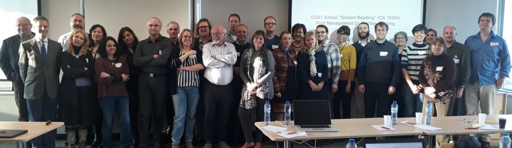

![[Put logo here]](media/logo.png)
TEI et la lecture à distance: le cas d'ELTeC
Lou Burnard Christof Schöch Carolin Odebrecht
La TEI est née interdisciplinaire
La réunion qui l'a fait naître, à Poughkeepsie en 1987, attirait des scientifiques de plusieurs disciplines -- faisant se mélanger des informaticiens, des linguistes formels et computationnels, ainsi que des littéraires, des classicistes, des médiévistes etc.
Son évolution manifeste l’intérêt de tels croisements disciplinaires et géographiques
"What is text really?"
- le "texte" est une abstraction, construite par ou pour un communauté de lecteurs
- mais il reste possible de construire un modèle abstrait rassemblant toutes les "particularités signifiantes" de tout texte
- ces particularités seraient utiles à considérer et à énumérer
- indépendamment de leur expression dans un document quelconque
- indépendamment de leurs usages par une discipline quelconque
La TEI a toujours essayé d'être le médiateur entre deux orthodoxies:
- le texte n'est ni moins ni plus que le document qui l'instancie
- le texte est un phénomène linguistique composé de mots : les propriétés statistiques des mots suffisent à le décrire
Tout comme les humanités numériques en général, la TEI cherche un équilibre entre ces deux positions
COST Action 16204 “Distant Reading for European Literary History”

- Voir https://www.distant-reading.net: un réseau collaboratif de chercheurs, pour la plupart européens, rassemblant une trentaine de partenaires représentant 24 pays
- organisé en quatre groupes de travail :
- WG1 Scholary Resources (Ressources scientifiques)
- WG2 Methods and Tools (Méthodes et outils)
- WG3 Literary Theory and History (Théorie et histoire littéraires)
- WG4 Dissemination (Vulgarisation)
- Objet principal : construction et exploitation d'un grand corpus de romans du 19eme siècle, sélectionnés selon des principes explicites, pour permettre des analyses comparatives de l’évolution européenne de cette forme littéraire
Objectifs de l'encodage ELTeC
- permettre les méthodes computationelles pour l'analyse littéraire (stylométrie, textometrie, attribution d'auteur etc. )
- garantir un minimum de métadonnées, sans permettre une extension indéfinie
- établir des éditions authentiques mais ne pas se préoccuper trop des questions éditoriales
- limiter strictement les choix d'encodage disponibles pour l'encodeur ; ainsi réduire la complexité de l'encodage pour le développeur
- faciliter ainsi un accès uniforme et consistant à travers les corpus multiples
Par contre, la TEI classique aime la variété, même si cela crée des difficultés pour les travaux comparatifs
Encodage(s) ELTeC
- niveau 0 : encodage minimal, sans trop d'intervention humaine
- niveau 1 : encodage un peu plus riche, mais automatisable à partir d'autres formats souvent rencontrés (par ex. Word, HTML, TEI...)
- niveau 2 : encodage enrichi avec des annotations linguistiques
métadonnées identiques à chaque niveau : un teiHeader sans flexibilité
level 0 : le minimum
- les pièces liminales éditoriales sont exclus
- les pages de titre sont distinguées d'autre sections liminaires mais sans balisage détaillé
- la structuration en chapitres et paragraphes est obligatoire, mais rien d'autre
- tout bloc de texte est considéré un <p> ou un <head>
- les mots interrompus par une coupure de ligne sont rassemblés
- sont exclus: tout paratexte, illustration, note, correction
- sont distingués facultativement : coupures de page, mises en évidence
level 1 : le plus pratique
- indication de sous-structure des chapitres en utilisant <milestone> et<label>
- possibilité d’interpréter la fonction des mots mis en évidence par ex. <emph> <foreign> ou <title>
- notes de bas de page etc. sont inclus mais transférés au <back>
- présence d'images etc. indiqué par <gap>
niveau 2 : annotation linguistique
- tokenisation avec <w>, utilisant les attributs de la classe att.linguistic pos, lemma, et join
- possibilité d'encoder les entités nommées en utilisant <rs>
- possibilité d'ajouter une segmentation additionnelle en <s>
- en principe un seul système d'annotation morpho-syntaxique (UDP) est déployé
- NB l'annotation est "en ligne", et non pas "déportée" -- faisable grâce à notre encodage minimal
... un travail toujours en cours
Métadonnées garanties
Tous les <teiHeader> fournissent, dans un format plus ou moins consistant :
- identification de l’œuvre et de sa langue (xml:id et xml:lang sur <TEI>)
- titre normalisé de l’œuvre (<title>)
- auteur, en format Nom, Prénom/s (année de naissance-année de décès) (<author>) avec référence VIAF si possible (sur @ref)
- indications de l'encodeur etc. (<respStmt>)
- information normalisée sur éditions numériqueq (générée automatiquement lors de l'archivage d'une version sur Zenodo) (<publicationStmt>)
- information sur toutes les sources utilisées, distinguant les versions imprimées, en page-images, et/ou transcrites(<bibl>)
- "Profile description", avec information sur la/les langues du texte et les critères de sélection :
- date de parution (un créneau parmi 5, entre 1840 and 1920)
- "canonicité" (high/low, nombre de ré-editions entre 1970 et 1990)
- sexe de l'auteur (M,F,X)
- taille du roman (short/medium/long)
Un schéma, avec des règles schematron, contrôle toutes ces exigences .
et bien sûr, il y a un ODD derrière tout cela !
- ELTeC ODD fournit tous les éléments, pour chacun des niveaux et pour l’en-tête
- sa version compilée est utilisée comme source par eltec-0, eltec-1, et eltec-2
- chaque niveau ELTeC correspond à un sous-ensemble différent
Voir sur https://github.com/COST-ELTeC/Schemas